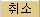

주문/체결- [1020](주식) 단계좌다종목주문
1. 개요 문구 변경
단일계좌에서 최대 30종목까지 한번에 매수, 매도, 정정, 취소 주문을 전송하는 화면입니다.
2. 화면설명
일괄 매수 이미지 변경

<일괄매수 4번째로 문구추가>
•  ->
-> 로 선택을 해지 하시면, 주문 확인창 없이 바로 주문이 가능합니다.
로 선택을 해지 하시면, 주문 확인창 없이 바로 주문이 가능합니다.
일괄매도 이미지 변경

<추가-일괄매도와 취소 사이에 추가>
▣일괄정정
•일괄정정 화면을 열면, 미체결 내역이 보여집니다. 자동으로 갱신되지 않을 경우,
 버튼을 클릭하시면 미체결 내역을 일괄 갱신합니다.
버튼을 클릭하시면 미체결 내역을 일괄 갱신합니다.•매도/매수 주문별, 특정종목별, 정규시간/시간외 주문을 필터링 할 수 있습니다.
•일괄 정정 가격을 주문가, 현재가, 매수1호가, 매도1호가, 상한가, 하한가로 변경 할 있습니다
•각 종목열의 종목의 주문가를 더블클릭 하시면, 와 같이 변경되며 원하시는 가격을 입력하실 수 있습니다.
•최종적으로
 버트늘 클릭하면 주문이 전송됩니다.
버트늘 클릭하면 주문이 전송됩니다. •
일괄취소 이미지 변경
공통기능-계좌/비밀번호 관리
개요 이미지 일부 삭제

<이미지 위치 변경 및 문구수정>
2. 계좌목록 설정
[2] 전체목록 보기/전체목록 감추기

[전체목록감추기] 버튼을 클릭하면 간단화면으로도 사용 가능합니다.
<문구추가>
[7] 계좌목록저장
• 사용할 계좌를 우측으로 이동하여 등록 하신 후 [계좌목록저장] 버튼을 누르면 각각의 확인창에 [예], [확인] 버튼을 클릭하시면 정상적으로 저장됩니다.

• 로그아웃 후 재접속 시에도 설정된 계좌목록을 그대로 사용하실 수 있습니다.
주문/체결-[1011]주식기본주문
1.개요 <이미지변경>

2. 기능 설명 <설명에 버튼이미지 추가/ 이미지변경>
주문설정은 위의 화면에서 환경설정 버튼을 누르고, 아래의 주식주문설정창에서 가능합니다.
버튼을 누르고, 아래의 주식주문설정창에서 가능합니다.

<신용주문>
- 매수<이미지 변경>
- 매도<이미지 변경/문구 추가>
③  : 보유하신 신용 종목 (자기, 유동융자) 중 매도가능 수량, 대주 매도가능수량을 보여줍니다.
: 보유하신 신용 종목 (자기, 유동융자) 중 매도가능 수량, 대주 매도가능수량을 보여줍니다.
④ 기존 도움말 ③ 내용
[7] 가로/세로 별침시 모습입니다.<이미지 변경>
[8] 버튼설명 <문구변경/추가>
(변경 될 원문)
• : 환경설정 창을 보여줍니다.
: 환경설정 창을 보여줍니다.
(주식주문설정차 기능 도움말 참조)-----바로가기 1009도움말과 동일
-미체결/체결/잔고 창
• 항목변경 창에서 보여줄 항목을 체크하시고 을 누르시면, 세부내용 조회 화면에 반영됩니다.
미체결 항목변경창 체결 항목변경창 잔고 항목변경창


• : 미체결 뎁 세부조회화면에 주문번호마다 취소주문을 할 수 있게 버튼이 생성됩니다.
• : 미체결 텝의 버튼으로 취소주문 시, 주문확인창 활성화 여부를 선택할수 있습니다. 단, 주식주문창에서 취소 주문 시, 주문확인창 여부는 종합 환경설정에서 변경하실 수 있습니다.
• : 선택된 종목들의 일괄취소 주문 시, 주문확인창 활성화 여부를 선택할 수 있습니다

주문/체결-[1001]주식기본주문
5.매도주문 세부 기능 설명
[변경 될 원문] ----------------------------------------------------------------------------------------------------------

-------------------------------------------------------------------------------------------------------------------------
[이미지]
[문구추가1]
3. : 미체결된 주문수량을 뺀 주문가능 수량이 수량 칸에 보여집니다.
4.  : 미체결, 체결 현황, 실시간 잔고, 주식 잔고 평가를 상세히 볼 수 있습니다.
: 미체결, 체결 현황, 실시간 잔고, 주식 잔고 평가를 상세히 볼 수 있습니다.
- 미체결 상세화면

- 체결 상세화면
- 잔고 상세화면

- 평가 상세화면

주문/체결-[1016]주식기본주문
[원문]-------------------------------------------------------------------------------------------------------------------
전체화면 이미지 총 7개 교체 (이미지에 적용되여 있는 도형 및 효과는 유지)

------------------------------------------------------------------------------------------------------------------
[이미지]

[문구추가1]
• 개발 주문단가 적용
 를 선택하시고, 변경할 계좌의 주문단가를 더블클릭하여 계좌별로 다른 주문단가를 적용할 수 있습니다.
를 선택하시고, 변경할 계좌의 주문단가를 더블클릭하여 계좌별로 다른 주문단가를 적용할 수 있습니다.
계좌/잔고-[1314]주식기본주문
[원문]-------------------------------------------------------------------------------------------------------------------
------------------------------------------------------------------------------------------------------------------
[이미지]

• : 실시간 잔고를 전체(, 현금, 신용(자기, 유통융자) 구분값으로 나누어 볼 수 있습니다.
: 실시간 잔고를 전체(, 현금, 신용(자기, 유통융자) 구분값으로 나누어 볼 수 있습니다.
• : 종목기준으로 현금, 신용(자기,유통융자,대주)보유수량을 합산하여 보여줍니다.
: 종목기준으로 현금, 신용(자기,유통융자,대주)보유수량을 합산하여 보여줍니다.

주문/체결-[1520]선옵션포지션분석